blockchainkit#
blockchainkit is a teaching toolkit for cryptography and blockchain systems, spanning 10 subpackages – from public-key cryptography and authenticated data structures to consensus, peer-to-peer networking and replicated execution – under one small, typed API. It’s built for students working through a course, curious learners exploring how a blockchain actually works, and educators building a demonstration. Every construction is written out in plain Python on the standard library, with parameters small enough that each value can be inspected, so the mathematics stays visible rather than hidden behind an optimized library.

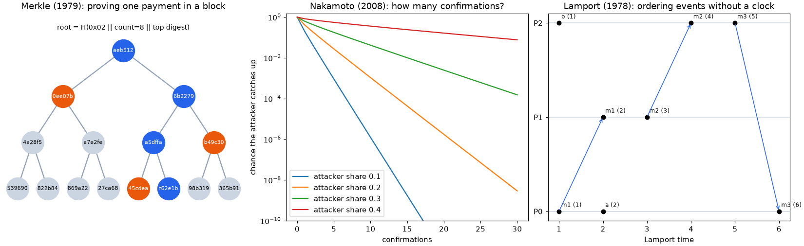
Every subpackage is grounded in the ideas it implements, not just coded against them: public functions carry runnable, CI-checked examples, and each subpackage’s history page traces the breakthroughs behind it – from the one-time pad to Casper finality – each one linked to the code and the gallery experiment that reproduce it.
In short, blockchainkit is 10 domains behind one consistent API, plus a history of cryptography and distributed systems in which every breakthrough links to runnable gallery code.
Important
This is teaching software, not hardened cryptography or a node compatible with an existing blockchain. Tiny RSA and Diffie-Hellman parameters and variable-time curve arithmetic keep the mathematics visible; the Schnorr scheme is not BIP-340, and blocks are not Bitcoin or Ethereum wire formats. Exact conventions and model boundaries states every such choice precisely. For real systems, use audited libraries such as cryptography or libsecp256k1.
blockchainkit.crypto– the one-time pad, baby-step giant-step and Pohlig-Hellman, Merkle’s puzzles, Diffie-Hellman and RSA, Shamir and Feldman secret sharing, Lamport signatures, birthday attacks, hash and Pedersen commitments, blind signatures, elliptic curves, zero knowledge and Fiat-Shamir, Merkle-Damgård and length extension, HMAC, Schnorr signatures, RFC 6979 nonces, and MuSig.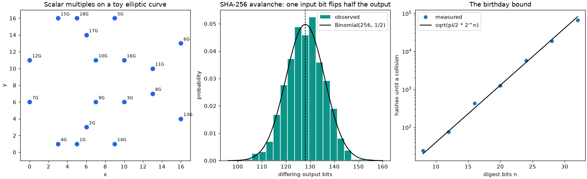
blockchainkit.structures– double-entry ledgers, Bloom filters, Merkle trees and proofs, hash chains, linked and batched timestamps, the UTXO and account models, light clients, Bitcoin’s duplicated-leaf bug, Certificate Transparency consistency proofs, transaction malleability, Merkle mountain ranges, replay protection, sparse Merkle trees, and blocks with cumulative-work fork choice.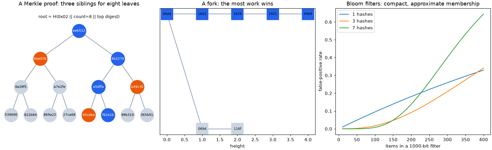
blockchainkit.consensus– the gambler’s ruin, Byzantine generals, Ben-Or and FLP, partial synchrony, PBFT, pricing functions and Hashcash, Nakamoto consensus and its double-spend calculation, difficulty retargeting, GHOST, selfish mining, proof of stake, nothing at stake, Casper FFG, and cryptographic sortition.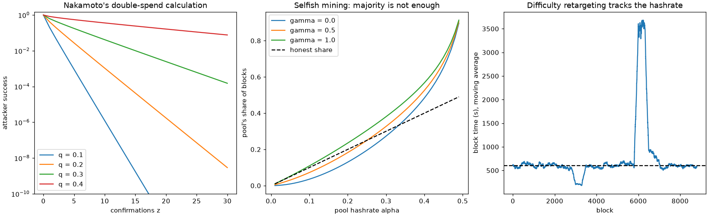
blockchainkit.network– discrete-event gossip; random, small-world and scale-free graphs; Lamport and vector clocks; epidemic rumor spreading; Bracha’s reliable broadcast; CAP; Kademlia with its Sybil and eclipse attacks; inv/getdata relay, propagation and forks, compact blocks, and Dandelion.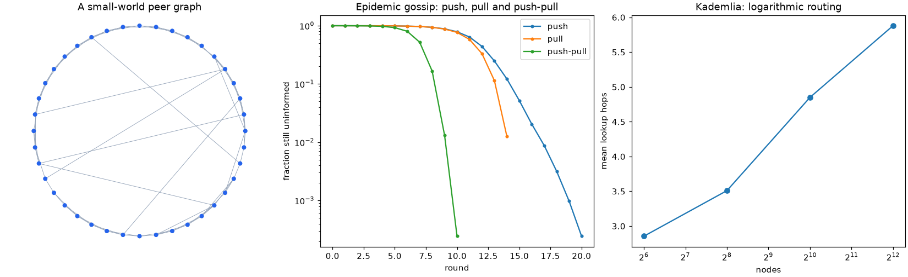
blockchainkit.vm– a deterministic 256-bit stack machine with gas and atomic failure, reverse Polish notation, Turing machines and the busy beaver, structured programming, Forth, state-machine replication, smart contracts, bytecode verification, Bitcoin Script with P2PKH and hash time-locked contracts, gas repricing, the DAO’s reentrancy, and integer overflow.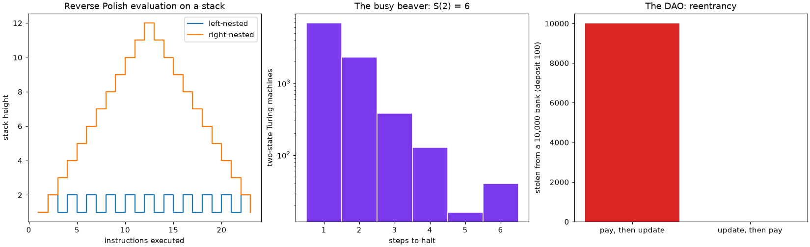
blockchainkit.contracts– a world-state model of contracts calling contracts; Floyd-Hoare proofs, symbolic execution, design by contract and fuzzing; Ricardian contracts and capabilities; ERC-20 and ERC-721; unchecked sends, gas denial of service and commit-reveal randomness; the Parity wallet incidents; proxies and CREATE2; Oyente; and Beanstalk’s flash-loan governance attack.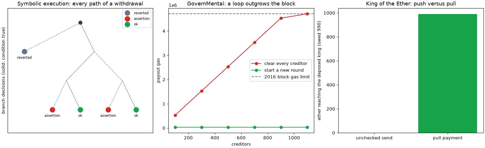
blockchainkit.economics– focal points and SchellingCoin; Vickrey’s and Myerson’s auctions and Hanson’s market scoring rule; block rewards, the halving, fee-only mining and mining games; EIP-1559; Dai, Uniswap and flash-loan oracle manipulation; priority gas auctions, sandwich attacks and proposer-builder separation.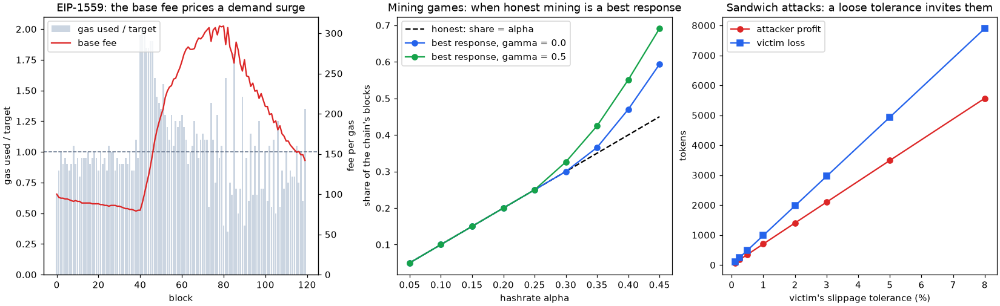
blockchainkit.channels– Reed-Solomon codes; Spilman’s, duplex and Lightning channels, Sprites, eltoo and watchtowers; balance probing; atomic swaps, BTC Relay and the Ronin and Wormhole exploits; Plasma, sharding, zk and optimistic rollups, and data-availability sampling.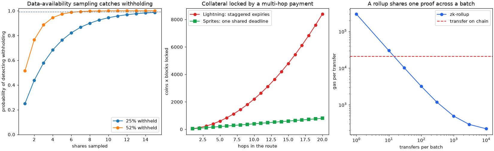
blockchainkit.proofs– the Schwartz-Zippel lemma, sum-check and IP = PSPACE; the PCP theorem and Kilian’s and Micali’s arguments; KZG commitments, QAPs, Groth16, trusted-setup ceremonies and PLONK on a toy pairing; Zerocash; and Bulletproofs, FRI, STARKs and Halo.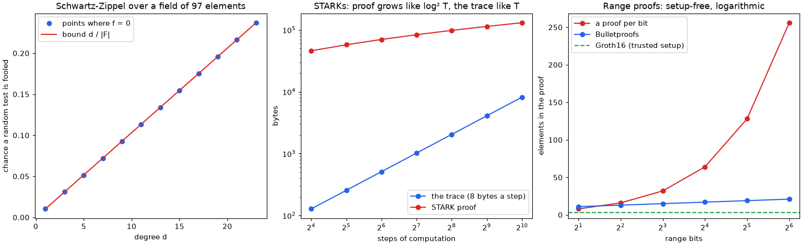
blockchainkit.fraud– Ponzi’s scheme, Ethereum’s Ponzi contracts and BitConnect; Benford’s law; Maxwell’s proof of reserves, Provisions, Mt. Gox and FTX; deceptive verified sources, ICO exit scams, honeypots and the Squid Game rug pull; the Willy bot, pump-and-dumps and NFT wash trading; ice phishing and address poisoning.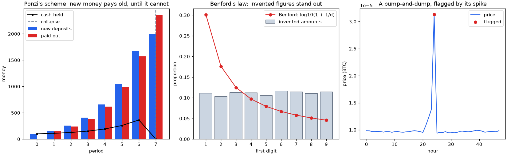


blockchainkit is part of a family of packages – physicskit, mathematicskit, chemistrykit and blockchainkit – that share the same architecture, API conventions, and history-driven documentation.
Install and try it#
pip install blockchainkit
import blockchainkit loads only the standard library; Matplotlib and NumPy
are installed for each subpackage’s plotting helpers in visualizers.
To try it without installing anything, open the quickstart notebook in Colab, or use the JupyterLite button at the top of every gallery example. Every gallery also has a download-all button for its scripts and notebooks. New to the topic? Begin with Start here: a blockchain without the jargon and Your first payment, step by step, keep the Glossary nearby, and follow the tutorials with their exercises. Exact conventions and model boundaries and Reproducible experiments and research scope state the model boundaries, and Developing blockchainkit covers development.
Conventionally imported as bk:
import blockchainkit as bk
alice = bk.crypto.public_key(7)
signature = bk.crypto.sign(b"pay Bob 25", 7, nonce=11)
print(bk.crypto.verify(b"pay Bob 25", signature, alice)) # True